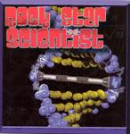

Home Artist links

Rock Star Scientist - Rock Star Scientist
| Artist: | Rock Star Scientist |
| Title: | Rock Star Scientist |
| Label: | Omega Tunage Records |
| Length(s): | 16 minutes |
| Year(s) of release: | 2004 |
| Month of review: | [12/2004] |
Line up
Scott Carle - drums
Jim Ericksen - bass
Eric Rissolo - piano, synth, synth bass, drum machine, percussion, loops
Jay Rusnak - lead guitar
David Quick - rhythm guitar, acoustic guitar
Tracks
| 1) | Apollo | 3.45
|
| 2) | Brain Check | 4.40
|
| 3) | Oblivion | 8.10
|
Summary
The leading element of the band
is Eric Rissolo who is responsible for all the music. Their bio says the
band combines 1. sci-fi, 2. acid jazz and 3. prog rock. This is the result.
The music
Apollo opens with effects, and we run into a somewhat cosmic and friendly
tune. Repetitive, waltzlike, this instrumental has some quirky aspects as
if we are not supposed to take it seriously. A very melodic electronic
piece with slow percussion. At the end some sharper edges arise due to
the introduction of guitar noise. We run right into the jazzy percussion
of Brain Check, accented with piano while a repetitive melody runs in the back.
The piano infuses the song with its temperament, sounding both refreshing
but also well-known. Think early Corea, but with some progrock influences
as well, including a stubborn synth.
The final track is also the longest, in fact, about the length of the first
two together. Oblivion is quite a rocky one, here the guitar finally gets
its say. The opening is one of the best ones I have heard recently.
The middle part is rather straightforward, especially drum wise, but
the piano intermezzo and the suffusion of energy make it all come out very well.
Without any problem, the band inserts a jazz accent here, a keyboard solo
there, temperamental tango, all sounding quite natural.
Conclusion
The United States have been known to deliver some of the most original sounding
prog artists, and I tend to rank this band among them. This is their first
try, but the combination is refreshing, the playing is good, as is
the recording. There is a certain amount of humour involved (I think),
the band does not fix on a supposed style, and in that sense they can be likened
to Bubblemath, another original outfit from the U.S. I am looking forward to
a full release.
© Jurriaan Hage